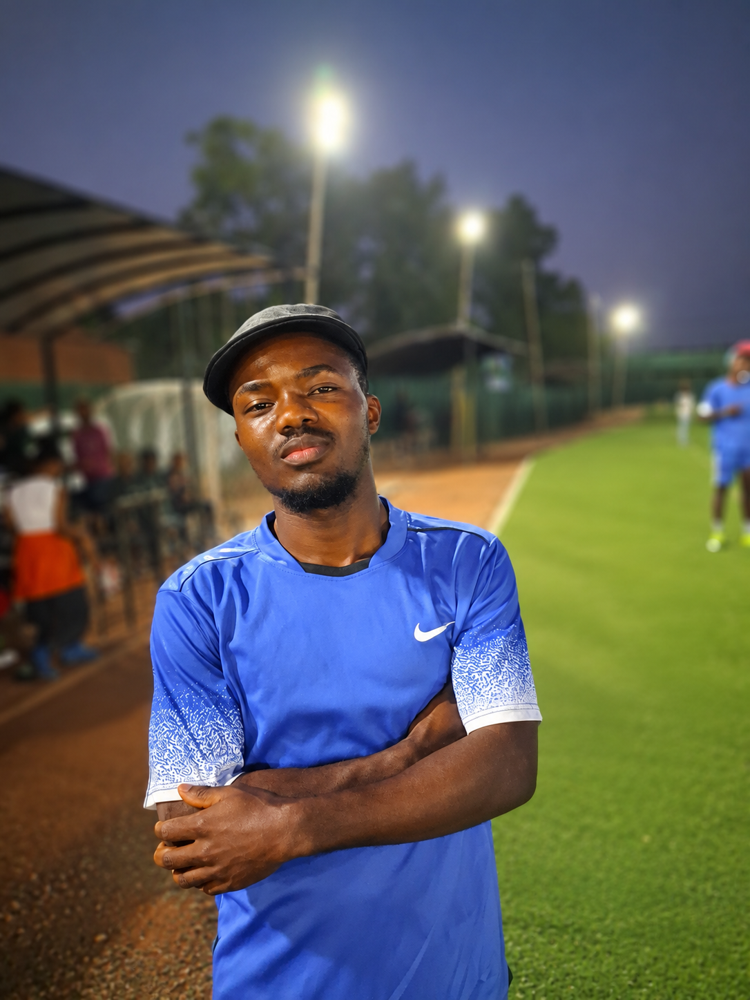

| COURSE MODULE | WHY I LIKE IT |
|---|---|
| Web Application Development | I like to learn how to create and design websites and other different platforms |
| Computer Literacy | I am passionate about mastering how a computer coordinates with all its hardware |
| Discrete Mathematics | I always feel and believe that mathematics is part of my everyday life |
